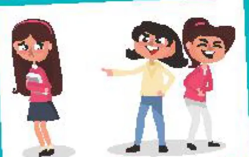
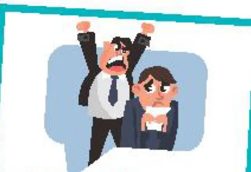
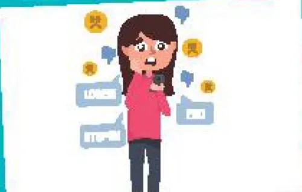
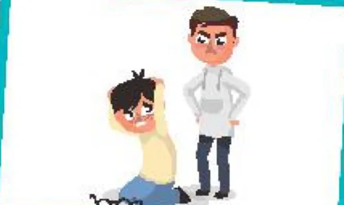

Types of bullying
Lesson 5 — Listening
9Five stops in 45 minutes
- ❓
Warm-up
Peer pressure quiz
5 min - 🔤
Pre-listening
Task 1 · key words
10 min - 🎧
While-listening
Tasks 2–3
15 min - 💬
Post-listening
Task 4 · discussion
12 min - ✅
Wrap-up
Exit ticket
3 min
Warm-up
Peer pressure: positive or negative?
5 minutesPeer pressure quiz
Your friends encourage you to try out for the basketball team. A. positive · B. negative peer pressure A — positive peer pressure
1. Which quality helps us resist negative peer pressure? A. Nice hair · B. Self-confidence · C. Speed B
2. When you feel pressured, what can help? A. Stay calm · B. Say no firmly · C. Both A & B C
3. Which response is unsafe? A. Ask an adult · B. Leave · C. Give in to a harmful demand C
Pre-listening
Words in the conversation
10 minutesClosest meaning
1. I find your comments very offensive, so you should apologise to me. A. nice · B. rude B. rude
2. I don’t believe his lies! A. things that are true · B. things that are not true B. things that are not true
3. Don’t feel ashamed to admit that you do not know something. A. proud · B. embarrassed B. embarrassed
Two more words
- physical (adj) /ˈfɪzɪkl/ (thuộc) thể chất, thân thể
- cyberbullying (n) /ˈsaɪbəbʊliɪŋ/ bắt nạt trên mạng
While-listening
A conversation between two students
15 minutesWhich type of bullying?
- 1. physical bullying
- 2. verbal bullying
- 3. social bullying
- 4. cyberbullying




Circle the correct answers
1. Technology has made bullying more / less common. more
2. Mai’s friend was bullying others / was bullied by others on social media. was bullied by others
3. One of the most common forms of physical bullying / cyberbullying is body shaming. cyberbullying
4. In their next meeting, they are most likely to talk about when / how bullying can be stopped. how
Post-listening
See it? Say something.
12 minutesWhat types of bullying have you experienced or seen happening to people around you?
🔎 What type of bullying was it?
😟 How did that person feel? What did they do?
You don’t have to share a personal story — talk about something you have seen or read about.
I have experienced verbal bullying
I have experienced verbal bullying before. As I was short-sighted and had to wear glasses to school, some kids at school called me ‘a four-eyed monster’ and even laughed at me. Some even took my glasses and hid them away so that I had to stay after class to look for them. It was really awful.
Before you leave…
1. Name the four types of bullying. physical · verbal · social · cyberbullying
2. Use offensive in a sentence. e.g. Offensive online comments can hurt classmates.
3. Say one safe thing a witness can do. tell a teacher or a trusted adult · support the victim · don’t join in
Homework
1. Do the Listening exercises in the workbook.
2. Write 3–4 sentences: how can students stop cyberbullying?
3. Prepare for Lesson 6 — Writing: a proposal against cyberbullying.